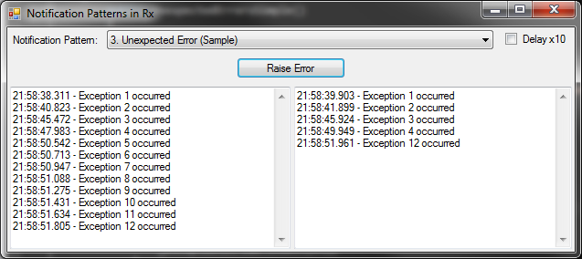
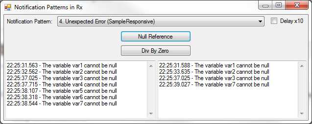
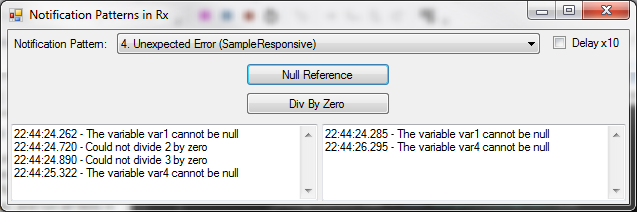
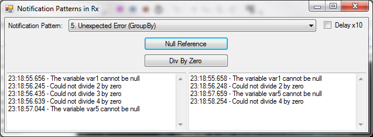

A feature that every serious program should have is the ability to notify when an unexpected error occurs. Every unexpected error should be reported and investigated. This is necessary in order to build quality software.
In this post I’ll cover an Rx notification pattern that will report unexpected errors. As with all notifications, an anti-spam rule will be part of the solution. Unlike the previous example, not every single unexpected error needs to be reported. When an unexpected error occurs it is usually the same type of error occurring over and over. The frequency of the error is usually unimportant. Because each reported error is investigated, reporting each type of error only once is usually sufficient.
This notification pattern is the most complicated of the three notification patterns I’m covering in this series of posts. I’ll build up to the finally implementation of the pattern in three small steps.
This first example is quite simple. It is very similar to the previous example of Lossless Notifications. However, in this example we don’t mind losing a few exceptions, as long as we catch one exception of each type. I’m not going to worry about the type of the exception until the final example in this post. This first example will simply throw away duplicate exceptions on the stream.
In the last example we learned of the Buffer method. That method would take a stream of exceptions and report a List of exceptions for each time boxed interval.
The Sample Rx method preforms a similar time boxing as the Buffer method. However, instead of returning a List of all Exception in each time box it simply reports the last one. Any other exceptions in the same time box are discarded.

You can see in the example that despite clicking the button repeatedly a notification message is only reported once every 2 seconds. Only the last exception within this 2 second box is reported.
The code that implements this is as follows. It contains the standard Do, ObserveOn, and Subscribe method class as all our other examples. The only manipulation done is a simple call to the Sample method.
return _exceptionStream
.Do(OnRawMessage)
.Sample(TimeSpanFactory.FromSeconds(2))
.ObserveOn(this)
.Subscribe(OnNotificationMessage);
Although the Sample method does box the exceptions into two second intervals, there is a very subtle behaviour in how it does this that I don’t like. Exactly when each time box starts and stops is somewhat random. Note from the example above that Exception 1 was not notified on until 1.6 second after it first fired.
With a trivial anti-spam example with a time interval of 2 seconds this 1.6 second delay might not sound like much of a problem. However in the real world this interval may be increased to 15 minutes or more. This can be a real problem. Unexpected errors can often precede the program becoming unstable and crashing. Crashed programs report no notifications.
I would like to slightly change the behaviour of the Sample method so that when an exception occurs with no preceding exceptions in the previous 2 seconds that exception is notified on immediately. Subsequent exceptions in the next 2 second interval can be filtered out and the behaviour can return the same as the original Sample method.
The trouble is that the Microsoft Rx library has no such function with the behaviour I would like. However, with a little Googling I found a SampleResponsive method [Stack Overflow, GitHub] that does exactly what I want.
I’m not going to trace through the code of the SampleResponsive method. Its implementation details are not important to this example. My real purpose of this example is to show how powerful the Rx community is. There are a limited number of functions in Microsoft’s Rx library. They are good functions. Sometimes they do exactly what you want and at the very least they are the good building blocks. If you think Rx can solve your problem but you just aren’t sure how, search or ask around. You can probably find it.

The subscription code (not shown, available here) is the same as the previous just calling SampleResponsive instead of Sample.
As promised in this final example of this post I will now take on the issue of ensuring each unique type is notified on. First let’s illustrate the current problem we have with the Sample Responsive example.

In this example Null Reference exceptions are the first an last errors that occur, in quick succession. Between these two Null Reference exceptions two other Divide By Zero exceptions occur. However our code doesn’t worry about the type of the exception. Therefore those Divide By Zero exceptions are filtered out by the Sample Responsive method and never reported on.
To solve this we use the Rx GroupBy method. We need to intelligently group on the type of the exceptions. It wouldn’t be a good idea to group on the exception message, because that can often contain context information that changes with each pass through the code. The type won’t change for multiple occurrences of the same error.
Grouping on the type of exception may not be sufficient. It is possible that the same type of exception is being reported from two different areas of the application. Therefore as well as the type of the exception, we should also group on the stack trace. This comparison should be done recursively on the inner exceptions. I’ve written a ExceptionEqualityComparer that implements this strategy of comparing exceptions. The source code is here.
The subscription code I use for Unexpected Error Notifications is as follows:
var comparer = new ExceptionEqualityComparer();
return _exceptionStream
.Do(OnRawMessage)
.GroupBy(ex => ex, comparer)
.Subscribe(streamOfGivenType =>
streamOfGivenType
.SampleResponsive(TimeSpanFactory.FromSeconds(2))
.ObserveOn(this)
.Subscribe(OnNotificationMessage));
The GroupBy method takes in an event stream (IObservable) and
returns an IObservable<IGroupedObservable>. They way I
like to think of this return type is as a collection or array of
IObservable objects. The Subscribe method following the
GroupBy essentially is working on each element in this array and
setting up a separate subscription to each element.
The inner subscription is the same as our previous example using
the SampleResponsive method. It is nested so an independent
copy of this subscription is running for each unique type of
exception. This yields the final behaviour that I want in my
Unexpected Error notification pattern.

That is the complete Unexpected Error notification pattern. On to the next pattern, Connection Errors.